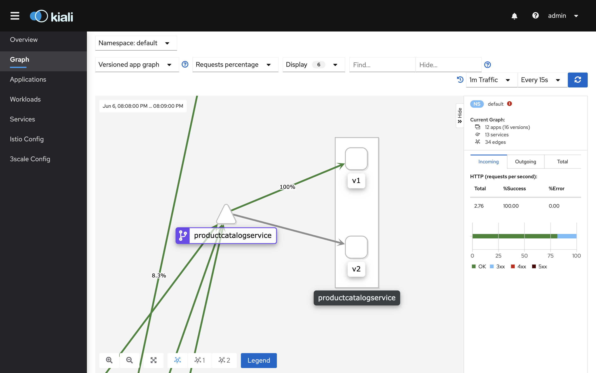

Traffic shifting
This chapter presents how to conduct a canary release of a new service version using Istio traffic shifting functionality.
Outline
In this chapter you will learn:
- What is Canary Release and why it is important.
- How to rollout a complete canary release using traffic shifting functionality.
Walkthrough
Canary release is a technique to reduce the risk of introducing a new software version in production by slowly rolling out the change to a small subset of users before rolling it out to the entire infrastructure and making it available to everybody. ~ Martin Fowler
One of the benefits of using Istio is that it provides the control needed to deploy canary services. The idea behind canary deployment is to introduce a new version of a service by first testing it using a small percentage of user traffic, and then if all goes well, increase, possibly gradually in increments, the percentage while simultaneously phasing out the old version. If anything goes wrong along the way, we abort and rollback to the previous version. In its simplest form, the traffic sent to the canary version is a percentage of requests, but in more sophisticated schemes it can be based on the region, user, or other properties of the request.
In this chapter we will conduct a canary release of the version v2 of the productcatalog service.
Shift traffic towards new app version
Open the Kiali dashboard:
$ istioctl dashboard kiali
Then, switch to the graph view, select Versioned app graph type, and enable Request percentage in the edge label dropdown. The graph should display a similar structure:

Note that initially all user traffic should be routed to the version v1 of the productcatalog service.
In order to start the canary deployment, apply the VirtualService policy:
$ kubectl -n default apply -f ./release/istio/productcatalogservice-vs-1.yaml
Inspect its content:
$ kubectl -n default describe vs productcatalog
Name: productcatalogservice
Namespace: default
...
Spec:
Hosts:
productcatalogservice
Http:
Route:
Destination:
Host: productcatalogservice
Subset: v1
Weight: 90
Destination:
Host: productcatalogservice
Subset: v2
Weight: 10
The above policy enforces distributing the traffic between versions v1 and v2 of the productcatalog service in 9:1 ratio (Weight parameter). 90% of the traffic will be routed to the version v1. The remaining 10% will be routed to the version v2.
Observe the Kiali dashboard. After 1-2 minutes, the version routing should be reflected in the mesh:
In the meantime, we should continuously observe the essential health parameters for the new service workload (success rate, latency).
Open the Grafana dashboard:
$ istioctl dashboard grafana
Navigate to the Mesh Dashboard and observe the success rate for the v2 workload:
In case, something went wrong, we could immadiately rollback the traffic to the old service version. For instance, by applying the following VirtualService policy:
Name: productcatalogservice
Namespace: default
...
Spec:
Hosts:
productcatalogservice
Http:
Route:
Destination:
Host: productcatalogservice
Subset: v1
However, the new service version performs well and we can route more user traffic towards it.
Apply the following policy:
$ kubectl -n default apply -f ./release/istio/productcatalogservice-vs-2.yaml
Inspect its content:
$ kubectl -n default describe vs productcatalog
Name: productcatalogservice
Namespace: default
...
Spec:
Hosts:
productcatalogservice
Http:
Route:
Destination:
Host: productcatalogservice
Subset: v1
Weight: 50
Destination:
Host: productcatalogservice
Subset: v2
Weight: 50
This time we distribute the event portion of traffic to both service versions. 50% of the traffic will be routed to the version v1 and 50% of the traffic will be routed to the version v2.
In a while, the version routing should be reflected in the Kiali graph:
Again, we should inspect metrics in the Grafana dashboard to ensure that the communication to the new service version is healthy.
If the communication is healthy, apply the last policy to redirect 100% of the traffic to the version v2 of the productcatalog service:
$ kubectl -n default apply -f ./release/istio/productcatalogservice-vs-3.yaml
Inspect its content:
$ kubectl -n default describe vs productcatalog
Name: productcatalogservice
Namespace: default
...
Spec:
Hosts:
productcatalogservice
Http:
Route:
Destination:
Host: productcatalogservice
Subset: v2
The canary deployment for the productcatalog service is complete:
Exercises
- Conduct canary deployment for the
v3version of theshippingservice. Include used Istio policies and screenshots from Kiali and Grafana in your report.